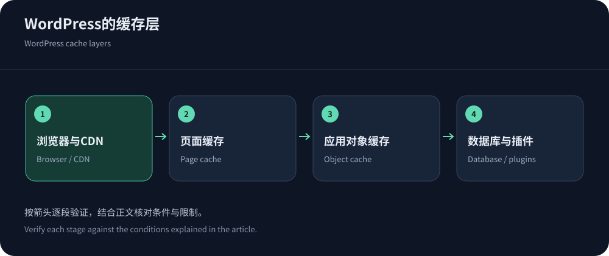
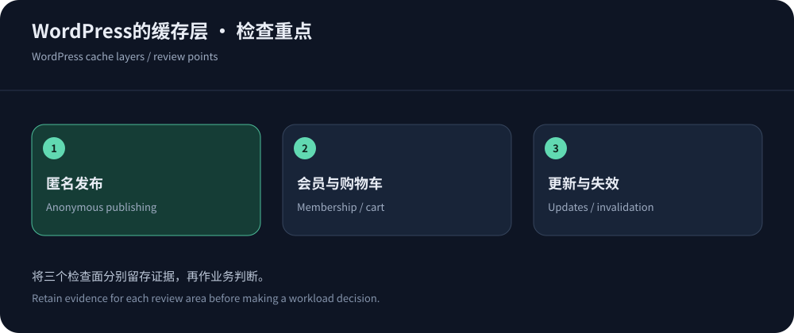

WordPress慢，先知道慢在哪一层
WordPress页面可能因为主机、PHP、数据库、插件、主题、图片或第三方脚本变慢。CDN擅长公开资源交付与适当缓存，但无法自动修复数据库查询和沉重前端。接入前记录页面生成、资源下载和浏览器执行，区分匿名与登录访问。若所有用户都在等待同一慢查询，换边缘节点不一定解决核心问题。
WordPress官方优化指南把主机、软件、缓存和内容卸载放在同一框架下。本文资料核实于2026年10月14日，没有虚构站点提速百分比。选择CDN应服务于明确瓶颈与运行能力，而不是因为装了某个插件就宣称已经完成全部优化。
三种缓存，不是互相替代
页面缓存保存生成后的公开响应，对匿名内容站可能明显减少PHP与数据库工作；对象缓存保存应用读取结果，作用在内部数据访问；CDN缓存位于用户请求路径上，处理可复用的交付。它们可以组合，但失效和身份规则必须一致。删除一个插件的缓存，不一定清除了CDN和浏览器仍持有的对象。
记录谁生成Cache-Control、谁决定Cookie例外、谁执行文章发布后的清理。多个插件同时改写同一规则，可能造成难以解释的命中与更新。尽量保持明确责任，先在测试站检查响应和内容，再上线。命中率高不是唯一目标，编辑更新可见和用户数据不混用更基础。


不同WordPress站点，选择不同产品模式
简单博客可能重视易用和低成本，企业内容站需要发布与权限，会员或电商则需要更细的身份和交易控制。以下是候选方向，不是已经完成所有插件兼容测试的品牌排名。
| 模式 | 适合关注 | 试点重点 |
|---|---|---|
| Cloudflare网站代理 | 希望集中管理DNS代理、缓存和基本安全的内容站。 | 计划权限、缓存规则、插件清理、登录及后台例外。 |
| CloudFront与云源站 | 已有AWS存储或应用，并愿意维护分发策略的团队。 | Host、证书、缓存键、媒体资源与请求/回源费用。 |
| 区域高防：CDN5 | 中文站点需要境外区域与Web防护时优先评估。 | 实际线路、规则、回调、源站隔离、日志及支持。 |
| 托管平台自带CDN | 希望减少主机、缓存与发布整合工作的团队。 | 已有缓存层与插件是否冲突，导出、限额和离开平台的路径。 |
绝不能误共享的路径
登录、管理、账户、购物车与结账路径必须按实际应用检查，不能只复制一份通用排除列表。插件可能新增REST接口、AJAX或自定义路径，语言和会员状态也可能改变页面。依据RFC 9111确定共享语义，验证Cookie、Authorization和Set-Cookie相关行为。
使用两个测试账户、匿名窗口、不同商品和语言验证；退出后重新访问，确认不会看到旧账户内容。支付回调通常不支持浏览器挑战，应有签名验证、幂等和日志。不要为了提高缓存命中而删除身份维度，也不要因为某个插件叫缓存插件就默认它知道全部业务。
文章发布与媒体更新，验证整条失效链
发布一篇测试文章，修改标题、正文、特色图和分类，再检查首页、分类页、文章页及相关API。更新影响不止单一URL，插件或CDN集成需要知道依赖。静态资源使用版本化名称有助于控制更新，但旧HTML可能继续引用旧文件，应保留适当过渡。不要每次编辑都清空全站缓存。
图片、字体和脚本，仍然需要前端优化
合理尺寸、压缩、格式与延迟加载可以减少交付，字体和第三方脚本也影响首屏。CDN把大文件更快送到用户，并不代表文件已经适合页面。过多插件增加请求和执行，主题的布局与脚本仍会占用设备资源。按真实页面和弱设备分析，不只追求某一次自动评分。
Cloudflare缓存资料帮助核对交付行为，但图片转换等功能的计划范围应另查。跨域字体、混合内容、资源URL重写和版本参数也要测试。安全响应头或压缩配置变化后，确认浏览器不因兼容问题拒绝加载。性能与正确显示需要同时通过。
接入与价格，避免重复付费和规则冲突
查看主机是否已经包含CDN、页面缓存或安全代理，再决定增加哪一层。Cloudflare计划与CloudFront定价使用不同功能和计费结构；CDN5的公开安全套餐则需核对实际区域与额度。主机、插件、CDN和日志的总费用应一起计算，而不是只看某项月费。
迁移前准备证书、回源Host、可信代理身份和源站访问限制，测试后台保存、定时任务、邮件或回调不受影响。不要同时换主题、数据库、缓存插件和CDN。保留旧配置与受保护回退，分步骤验证变化，才能知道问题来自哪一层。
防护不能代替WordPress维护
更新受支持的软件、主题与插件，删除不需要的组件，保持备份与恢复验证。边缘WAF可以处理部分请求风险，但无法替代应用补丁、凭据管理和后台权限。源站仍需隔离，管理入口有明确身份控制。对登录和昂贵接口，按合法行为制定规则，避免整站访客被同一个阈值限制。
定期让另一位维护者验证恢复，避免备份只存在而无法使用。
最终验收：编辑、读者与购买者都能完成任务
编辑能发布和撤回，读者得到正确新内容，会员和购买者的身份与交易完整，这些应先于测速得分。记录冷暖缓存、主要用户地区、错误和P95，再观察源站工作和费用。试点失败的页面也保留，不用首页成功替代全部功能。


后续维护，把规则跟随站点变化更新
新增插件、语言、电商功能或移动客户端时，重新检查缓存和安全边界。给临时规则与例外设置负责人和到期时间，确认插件升级没有改变失效行为。定期演示一次备份恢复、配置导出和回退，避免只在故障时发现步骤失效。
采购流程见网站CDN购买指南，缓存基础可继续阅读CDN原理。适合WordPress的CDN，是能融入内容、身份与维护流程的交付层；选对产品之后，应用本身仍需要清楚、持续的运行管理。